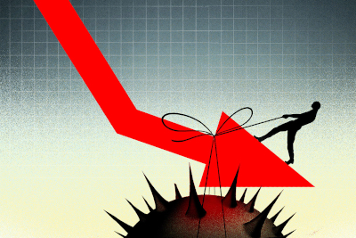

The COVID-19 pandemic is one of the largest issues we have faced in the 21st century.
The virus has single-handedly put major strains on the world economy, cost millions of people their jobs and main source of income, and has forced us to delay our environmental and climate concerns for the foreseeable future.
[1]
READ MORE
We believe that an increased focus on urban farming can help us combat the economic hit of the COVID-19 pandemic, by creating new, environmentally conscious and sustainable jobs.
[2]
READ MORE
Our company and project was inspired by:
UN's Sustainable Development Goal 11: Make cities inclusive, safe, resilient and sustainable.